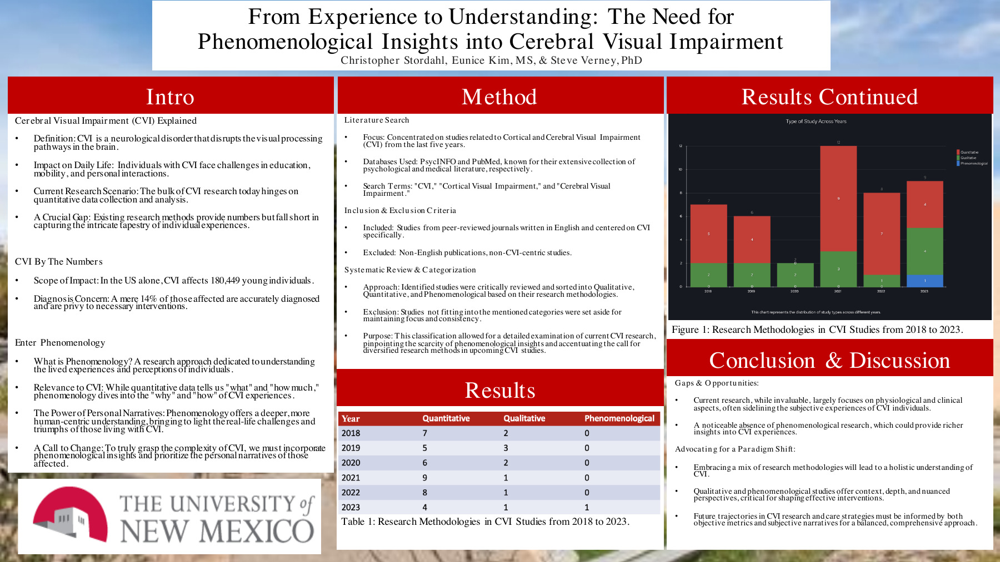

NMPA Fall 2023 · Poster · 1 page
From Experience to UnderstandingThe Need for Phenomenological Insights into Cerebral Visual Impairment
Christopher Stordahl, Eunice Kim, MS, and Steve Verney, PhD
In this literature review, I examined how CVI is studied and argued for a greater place for lived experience and personal narratives alongside numerical measures.
Read the NMPA poster on this page
Use the PDF reader to zoom. You can also open the full-size file in a new tab.
If the reader does not display, use the View poster PDF or Download button above.